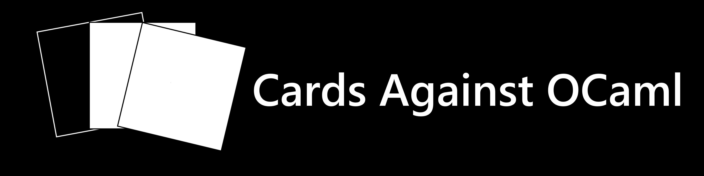
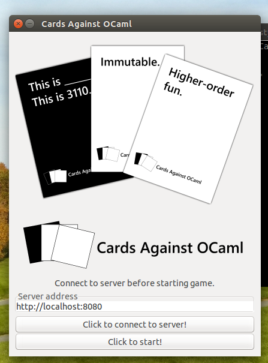

Cards Against Humanity Game Engine. Written entirely in OCaml.
Background
Cards Against OCaml is a multiplayer, server-client implementation of the popular card game Cards Against Humanity. Written in November of 2015 as the final project for CS 3110 at Cornell University, Cards Against OCaml was a team effort representing the result of several weeks of design, implementation, and testing.

Under construction. Stay tuned!